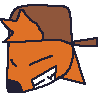
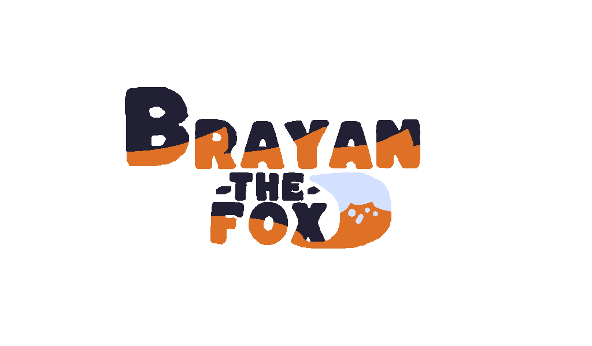

¿Quiénes Somos?
Ricutta Games (anteriormente conocido como Electrónic Games —nombre que surgió mientras su creador comía pasta) no es solo un estudio enfocado en crear juegos, sino una iniciativa que busca construir una comunidad grande donde todos puedan compartir sus ideas, artes y proyectos.
Nuestro Juego Principal: Brayan The Fox

Brayan The Fox es un juego 2D de acción y adrenalina pura. Su protagonista es Brayan, un zorro dedicado a robar diamantes por diferentes partes del mundo utilizando un peculiar mundo de bolsillo: un espacio oscuro lleno de estrellas, con una estética que parece pintada a mano y puertas esparcidas al azar que conducen a lugares aleatorios.
El objetivo de Brayan es convertirse en el poseedor de todo el dinero del mundo, esquivando a la policía y a diversos monstruos en su camino.
Inspiraciones y Estilo
El juego bebe directamente de grandes referentes del género como Sonic The Hedgehog, Pizza Tower y la saga WarioWare.

Tecnología y Equipo
- Motor: Desarrollado en Godot Engine 3.6 utilizando el lenguaje GDScript.
- Arte y Diseño: Creado por Kevin Arias, fundador del estudio.
- Música: Compuesta por el talentoso creador de TikTok Funky.FLP.
- Herramientas y Recursos: Elaborado con la ayuda de LibreSprite, freesound y recursos temporales para la demo.
Próximos Pasos: SAGE 2026
¡El estudio dirá presente! Ricutta Games participará oficialmente en la edición de SAGE 2026 con la demo jugable de Brayan The Fox.